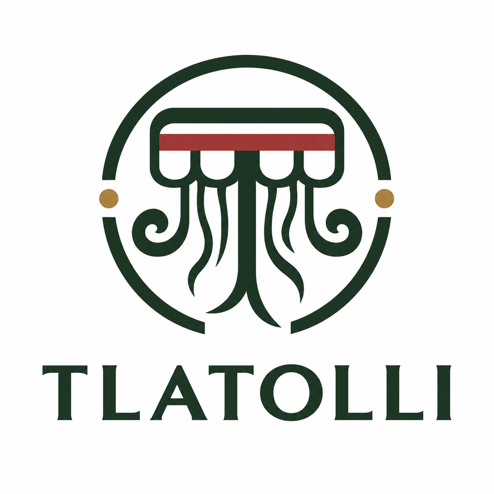

Clientes dispersos
Tu audiencia vive en distintos canales y no existe un recorrido claro para reconocerla, atenderla y hacerla volver.

Estrategia digital con raíz mexicana
Tlatolli diseña infraestructura digital de crecimiento: tecnología, contenido y datos que conectan cada punto de contacto con tu negocio.
Problemas que resolvemos
Tu audiencia vive en distintos canales y no existe un recorrido claro para reconocerla, atenderla y hacerla volver.
Contenido, promociones y seguimiento avanzan por separado, sin una lógica común que los convierta en experiencia.
Hay actividad, pero falta una lectura confiable para saber qué funciona por momento, producto, frecuencia y retención.
Lo que hacemos posible
Tu negocio no necesita más ruido. Necesita claridad para saber dónde crecer y un equipo capaz de hacerlo realidad.
Estrategias digitales para aumentar el alcance y generar oportunidades comerciales.
Conocer más ↗Analizamos el comportamiento de tus clientes para optimizar campañas y productos.
Conocer más ↗Diseñamos experiencias y sistemas de recompensas que hacen que vuelvan.
Conocer más ↗Integramos ventas, clientes, productos y campañas en un mismo ecosistema.
Conocer más ↗Una agencia, muchas posibilidades
Creemos que la tecnología tiene más valor cuando ayuda a las personas a hacer mejor su trabajo. Por eso unimos creatividad, estrategia y desarrollo para resolver lo que de verdad importa.
Capacidades
Diseñamos piezas que trabajan juntas. Cada capacidad puede vivir sola o formar parte de un ecosistema completo.
Calendario, fechas relevantes, captación y presencia en Instagram, Facebook, TikTok y YouTube.
Reels, carruseles, video corto, fotografía, guiones y piezas educativas para cada canal.
Integración web y redes, analizador de chat, encuestas, preguntas y participación.
Web responsiva con apariencia de app, perfiles y recorridos de conversión.
Registro, historial, recompensas, seguimiento médico o comercial, descuentos programados y segmentación.
Apple Wallet y Google Wallet con QR dinámico, beneficios y actualizaciones.
Lecturas por día, semana, mes, temporada, producto, horario, frecuencia, retención y conversión.
Recordatorios, campañas, recompensas, post-compra y reactivación.
Clientes, compras, campañas, conversión, segmentos y actividad en una sola vista.
Sucursales, puntos de venta, eventos, servicios y rutas en una experiencia clara.
El ecosistema Tlatolli
Visualiza, organiza y activa tu operación digital desde una misma lógica.
Calendarios, campañas y publicaciones organizadas para cada canal.
Ver solución ↗Una idea, muchas formas de conectar con tu audiencia.
Ver solución ↗Una experiencia de fidelización para convertir compras en relaciones.
Ver solución ↗Herramientas que se adaptan a la manera en que tu negocio funciona.
Ver solución ↗Portafolio real
Casos reales con enlaces directos. Sin métricas inventadas: revisa cada sitio y repositorio por tu cuenta.
Experiencia digital para una marca con movimiento, claridad y presencia propia.
Presencia digital que conecta identidad, cultura y una navegación cercana.
Espacio digital para comunicar comunidad, actividades y pertenencia.
Portafolio vivo
Los enlaces anteriores son la referencia verificable de este portafolio.
Proceso de trabajo
No empezamos por una herramienta. Empezamos por entender el recorrido, elegir la primera palanca y medir lo que importa.
Mapeamos negocio, audiencias, canales, operación y puntos de fricción.
Convertimos hallazgos en recorridos, contenido y componentes digitales.
Construimos la primera versión y conectamos las piezas que ya existen.
Observamos señales, ajustamos decisiones y definimos el siguiente paso.
Diagnóstico digital
Responde tres preguntas y recibe una primera lectura de lo que tu negocio puede activar.
Contacto
Una buena conversación puede ser el primer paso de algo grande. Cuéntanos sobre tu negocio, tu reto y hacia dónde quieres llevarlo.